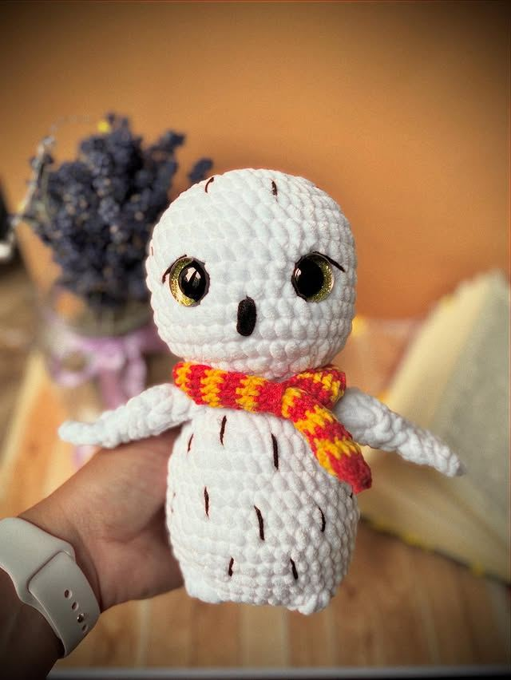
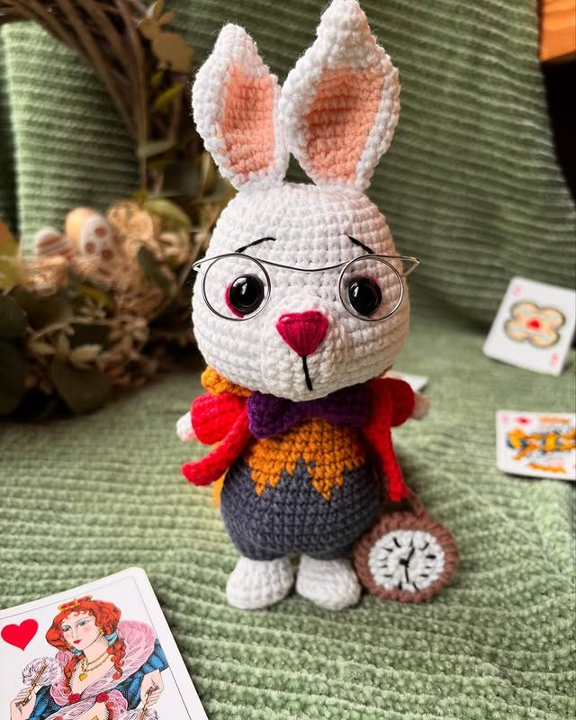
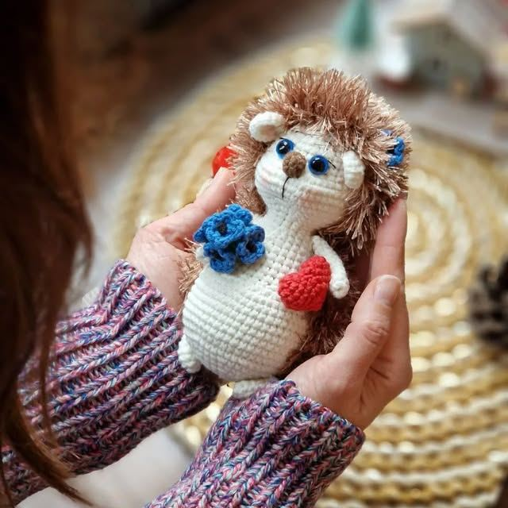
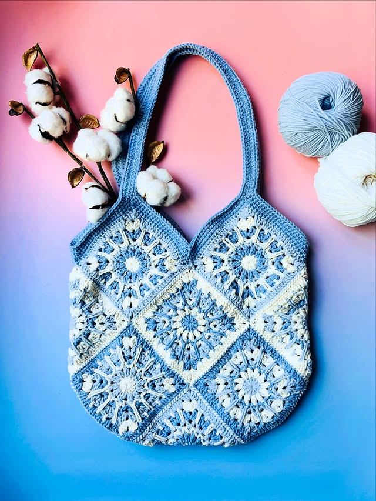
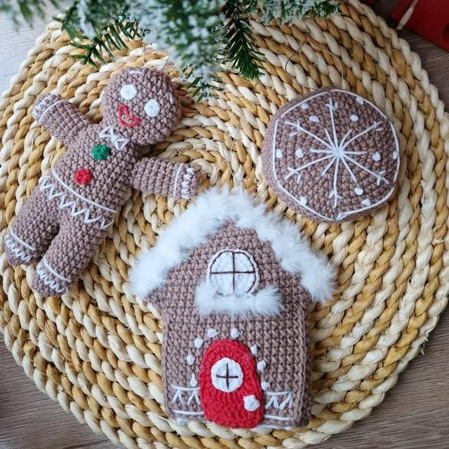

Handmade Doll
Morning guys, just wanted to share a quick look at my latest creation.
Zobacz na Instagramie
Capybara with Backpack
Update: capybaras have invaded my life 🙂 Stay tuned for their backpack cuteness overload.
Zobacz na Instagramie
Festive Decorations
Here are a few festive decorations from my Christmas collection.
Zobacz na Instagramie
Christmas Cat
Cat owners, I'm curious — are your kitties obsessed with the Christmas tree too?
Zobacz na Instagramie
Weekend Capybaras
Me and the Capybaras just wanted to wish you a fantastic weekend!
Zobacz na Instagramie
Christmas Market
Spring craft market — come visit and see my creations in person!
Zobacz na Instagramie

Hedwig Owl
A gift for Harry's eleventh birthday — Hedwig was one of his closest companions.
Zobacz na Instagramie
White Rabbit
Oh dear! Oh dear! I shall be too late! — now part of my collection.
Zobacz na Instagramie


Fluffy Sheep
If you need someone to hug, this sheep is exactly what you are looking for.
Zobacz na Instagramie

Galina Collection Doll
An advanced project with a lot of small details — I love the result.
Zobacz na Instagramie


Gingerbread Collection
You can use them as toys or Christmas tree decorations.
Zobacz na Instagramie


Jeszcze nic tutaj
Wybierz inny filtr, aby zobaczyć więcej prac.